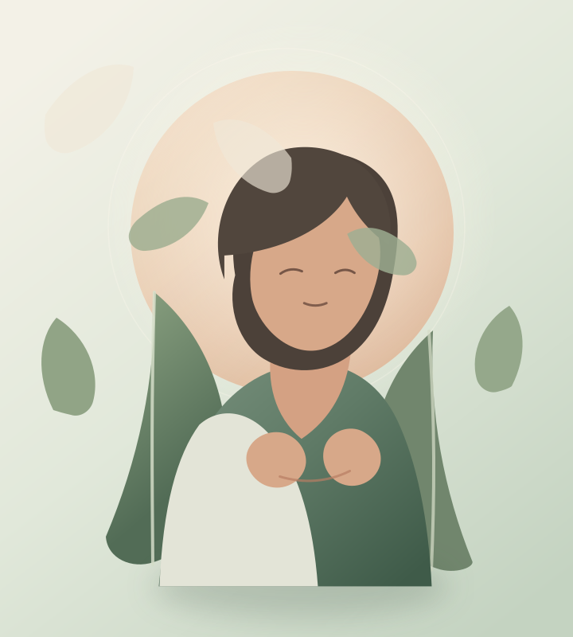

Un espace pour souffler et se retrouver
Et si tu allumais ta lumière intérieure ?
À force de prendre soin de tout le monde, on finit parfois par s'oublier. Et si tu t'accordais enfin un moment pour toi ?
Je t'accompagne à retrouver confiance en tes ressources et à avancer vers plus d'équilibre, de sérénité et d'épanouissement dans ton quotidien.

en douceur.
ET SI C'ÉTAIT TON MOMENT ?
Tu portes beaucoup.
Tu n'as pas à tout porter seule.
Quand le quotidien prend toute la place, il devient difficile d'entendre ce dont on a vraiment besoin. Prendre un temps pour toi, c'est déjà ouvrir un nouvel espace.
Découvrir comment je peux t'accompagnerMon approche
Une rencontre entre corps, esprit et émotions.
Chaque personne est unique. Je compose avec différents outils pour proposer un accompagnement qui te ressemble.
Énergétique
Un temps pour te recentrer, écouter tes ressentis et retrouver ton équilibre intérieur.
02PNL
Explorer tes ressources et faire émerger de nouvelles façons d'avancer, à ton rythme.
03Huiles essentielles
Découvrir une approche sensorielle et créer des rituels simples pour ton quotidien.
Des pratiques complémentaires réunies dans un accompagnement personnalisé. Explorer mon univers
À propos
Enchantée,
je suis Yolaine.
Maman de 4 enfants, épouse comblée, amoureuse de la vie… et incapable de commencer ma journée sans un bon café ! Mais s'il y a bien une chose qui me fait vibrer, c'est l'humain.
J'ai mis du temps à le comprendre, mais aider les autres à se sentir bien dans leur vie, c'est bien plus qu'une passion pour moi. C'est devenu une évidence, et j'ai aujourd'hui la chance d'en avoir fait mon métier.
À travers l'énergétique, la PNL et les huiles essentielles, j'accompagne celles et ceux qui souhaitent se retrouver, reprendre confiance et avancer vers une vie qui leur ressemble. Ce qui m'anime profondément, c'est de voir les autres s'épanouir et découvrir cette lumière qui sommeille en eux.
Faisons connaissanceLE PREMIER PAS PEUT ÊTRE TOUT PETIT
Et si on en parlait ?
Tu aimerais en savoir plus ou simplement voir si mon accompagnement te correspond ? Écris-moi, et prenons le temps d'échanger.
Me contacter